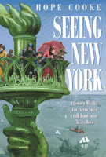

<body bgcolor="#FFFFFF" text="#000000" link="#0000FF" vlink="#CC0000" alink="#CC0000"><center><hr width="350" size="1" align="center" noshade>An off-the-beaten bath tour of New York that transcends the usual guide book<hr width="350" size="1" align="center" noshade><p><a href="https://cdcshoppingcart.uchicago.edu/Cart/ChicagoBook.aspx?ISBN=9781566392884&&PRESS=temple" target="_top">Buy this book!</a> | <a href="https://cdcshoppingcart.uchicago.edu/Cart/Cart.aspx?PRESS=temple" target="_top">View Cart</a> | <a href="https://cdcshoppingcart.uchicago.edu/Cart/Cart.aspx?PRESS=temple" target="_top">Check Out</a></p><p></p></center><!--none//--><h1>Seeing New York</h1>
<H2>History Walks for Armchair and Footloose Travelers</H2>
<h3>Hope Cooke</h3>
<P>cloth 1-56639-288-8 $69.95, Apr 95, <FONT COLOR=#990033>Out of Stock Unavailable</FONT>
<br>paper 1-56639-289-6 $30.95, Apr 95, <FONT COLOR=#990033>Available</FONT>
<br>Electronic Book 1-43990-486-3 $29.95 <FONT COLOR=#990033>Out of Stock Unavailable</FONT>
<BR> 464 pp
6x9
14&nbsp;map(s) 14&nbsp;figures 126&nbsp;halftones
</P><BLOCKQUOTE><I>"She really is 'Hope Cooke, the guide to New York.' And though her newest book traces the destinies of immigrants, bankers and writers, it also marks another passage&#151her own."</I>
<br>&#151<b><i>New York Times</i></b><I></I></BLOCKQUOTE>
<p>Since the 1700s, various ethnic and immigrant groups have been shifting and negotiating their place in New York City. Hope Cooke also struggled to find a "correlation of space" and "sense of belonging" when she returned to the city after spending her adult life living in a place in the Himalayas, the Queen of Sikkim (a tiny kingdom near Nepal). Abroad for so long, she returned with an urgent need to rediscover this city, to "find her way home."
<p>It was not always a comfortable journey for Cooke: "On the days I felt secure, Manhattan's maelstrom was pure energy. On shaky days, the boundlessness made me yearn for limits, or, failing that, at least a vantage point." The book that has emerged is an entertaining and integrated account of New York City's social history, architecture, physical space, and culture. Starting with the American Indian settlements and the early days when the southern-most tip of Manhattan held little more than a bleak outpost of Dutch fur traders, Cooke tracks the economic development and journeys north, from the Village's beginnings as a refuge from dreaded summer fevers to the present day Dominican enclave of Washington Heights.
<p>Written for armchair enthusiasts and walkabout adventurers, this book travels fourteen of the city's distinct and significant neighborhoods. Cooke's guide will make a historical sleuth out of local residents and tourists alike. Her off-the-beaten-path insights and witty observations help decode the urban landscape and reveal how social changes have reworked the city's terrain. Enhancing the narrative are 140 illustrations, including old engravings, maps, and current photographs.
<BR>&nbsp;<h2>Reviews</h2>
<p><I>"Cooke's observations, steeped in the social and cultural detail that makes space into place, are poignant and telling."</I>
<br>&#151<b><I>Metropolis</i></b>
<p><I>"Useful as it is for the visitor, the book is also a gift to the resident pedestrian."</I>
<br>&#151<b>New York Magazine</I></b>
<p><I>"As if taking us by the hand and conducting us from street to street, Ms. Cooke evokes the sights and smells and sound of all those earlier New Yorks. In a hundred unexpected places, she unearths clues to the transformation of a grubby fortified trading post into the greatest of cities. The many levels of ancient Troy are far easier to make out than the many levels of contemporary New York; we have reasons to be grateful to Ms. Cooke for opening our eyes to its accumulated wonders. Wherever she leads us, we are happy to follow."</I>
<br>&#151<b>Brendan Gill</b>
<p><I>"Hope Cooke is a witty and encyclopedic walking companion whose knowledge and enjoyment of the City will infect you. After reading her account of the City's social and architectural legacy, you will never see New York in the same way again."</I>
<br>&#151<b>Peg Breen</b>, President, New York Landmarks Conservancy
<BR>&nbsp;<h2>Contents</h2><P>
<p>Preface
<br>Acknowledgments
<br>A Note to Readers and Walkers
<br>1. Manhattan and the Harbor
<br>2. South Street Seaport and Sailors' Snug Harbor: The Port and the Mariner
<br>3. The Lower East Side: Immigration from Past to Present
<br>4. Greenwich Village
<br>5. The East Village
<br>6. Irish History in Lower Manhattan
<br>7. Brooklyn Heights: Victorian Bastion
<br>8. Whitman's New York: From Soho to Fulton Ferry
<br>9. Ladies' Mile
<br>10. Harlem
<br>11. The Upper West Side
<br>12. Fifth Avenue: Urban Chateaux
<br>13. Asian Flushing
<br>14. Washington Heights: Dominican Imprimaturs
<br>Illustration Credits
<br>Index
<br>About the Author
</P><BR>&nbsp;<H2>About the Author(s)</H2>
<P><b>Hope Cooke</b> is a writer and urban historian. She has lectured widely on New York history, directed the walking tours program at the Museum of the City of New York, and written a weekly column for the <I>New York Daily News</I>. Her essays, short stories, and reviews have appeared in such popular periodicals as <I>Redbook</I>, <I>Travel and Leisure</I>, <I>The New York Times</I>, and <I>The Chicago Sun Times</I>. Among her previously published books is her acclaimed autobiography, <I>Time Change</I>.</P>
<BR><H2>Subject Categories</H2>
<p><A HREF="/tempress/general.html" TARGET="_top">General Interest</a>
<BR><A HREF="/tempress/urban.html" TARGET="_top">Urban Studies</a>
</p>
<BR><h2 class="inpageheading">In the series</H2>
<P><I><a href="http://www.temple.edu/tempress/critical.html" onMouseOver="window.status='Click for other books in this series!'; return true;" onMouseOut="window.status=''; return true;" target="_top">Critical Perspectives on the Past</a></i>, edited by <a href="http://www.temple.edu/tempress/authors/benson_memoriam.html" target="_top">Susan Porter Benson</a>, Stephen Brier, and Roy Rosenzweig.
</p><p><i>Critical Perspectives on the Past</i>, edited by Susan Porter Benson, Stephen Brier, and Roy Rosenzweig, is concerned with the traditional and nontraditional ways in which historical ideas are formed. In its attentiveness to issues of race, class, and gender and to the role of human agency in shaping events, the series is as critical of traditional historical method as content. Emphasizing that history is itself an interpretation of material events, the series demonstrates that the historian's choices of subject, narrative technique, and documentation are politically as well as intellectually constructed.</p>
<p align="center"><a href="https://cdcshoppingcart.uchicago.edu/Cart/ChicagoBook.aspx?ISBN=9781566392884&&PRESS=temple" target="_top">Buy this book!</a> | <a href="https://cdcshoppingcart.uchicago.edu/Cart/Cart.aspx?PRESS=temple" target="_top">View Cart</a> | <a href="https://cdcshoppingcart.uchicago.edu/Cart/Cart.aspx?PRESS=temple" target="_top">Check Out</a></p><p><font face="Arial" size="1"><a href="copyright.html" onMouseOver="window.status='Web Copyright Policy';return true;" onMouseOut="window.status=''" title="Web Copyright Policy">&copy;</a> 2015 <a href="http://www.temple.edu" target="new" onMouseOver="window.status='Link to Temple University home page';return true;" onMouseOut="window.status=''" title="Link to Temple University home page">Temple University</a>. All Rights Reserved. http://www.temple.edu/tempress/titles/784_reg.html</font></p>